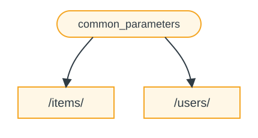
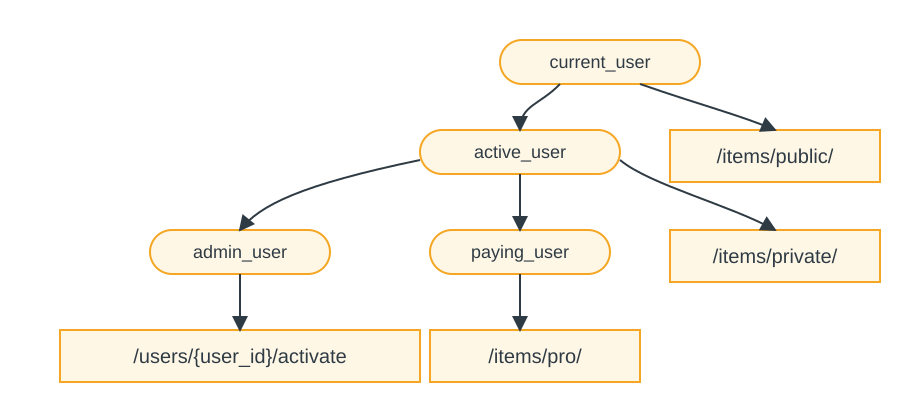

Зависимости
FastAPI имеет очень мощную, но интуитивную систему Инъекция зависимостей.
Она спроектирована так, чтобы быть очень простой в использовании и облегчать любому разработчику интеграцию других компонентов с FastAPI.
Что такое инъекция зависимостей («Dependency Injection»)
В программировании «Dependency Injection» означает, что у вашего кода (в данном случае у ваших функций обработки пути) есть способ объявить вещи, которые требуются для его работы и использования: «зависимости».
И затем эта система (в нашем случае FastAPI) позаботится о том, чтобы сделать все необходимое для предоставления вашему коду этих зависимостей (сделать «инъекцию» зависимостей).
Это очень полезно, когда вам нужно:
-
Обеспечить общую логику (один и тот же алгоритм снова и снова).
-
Разделять соединения с базой данных.
-
Обеспечить безопасность, аутентификацию, требования к ролям и т.п.
-
И многое другое...
Все это при минимизации повторения кода.
Первые шаги
Давайте рассмотрим очень простой пример. Он настолько простой, что пока не очень полезен.
Но так мы сможем сосредоточиться на том, как работает система Dependency Injection.
Создайте зависимости, или «dependable» (от чего что-то зависит)
Сначала сосредоточимся на зависимости.
Это просто функция, которая может принимать те же аргументы, что и функция обработки пути:
from typing import Annotated
from fastapi import Depends, FastAPI
from fastapi.middleware.cors import CORSMiddleware
app = FastAPI()
app.add_middleware(
CORSMiddleware,
allow_origins=[
"http://localhost:63342",
"http://localhost:8000",
"http://127.0.0.1:8000"
],
allow_credentials=True,
allow_methods=["*"],
allow_headers=["*"]
)
async def common_parameters(q: str | None = None, skip: int = 0, limit: int = 100):
return {"q": q, "skip": skip, "limit": limit}
@app.get("/items")
async def read_items(commons: Annotated[dict, Depends(common_parameters)]):
return commons
@app.get("/users")
async def read_users(commons: Annotated[dict, Depends(common_parameters)]):
return commonsИ все.
2 строки.
И она имеет ту же форму и структуру, что и все ваши функции обработки пути.
Можно думать о ней как о функции обработки пути без «декоратора» (без
@app.get("/some-path")).
И она может возвращать что угодно.
В этом случае эта зависимость ожидает:
-
Необязательный query-параметр
qтипаstr. -
Необязательный query-параметр
skipтипаint, по умолчанию0. -
Необязательный query-параметр
limitтипаint, по умолчанию100.
А затем просто возвращает dict, содержащий эти значения.
Импорт Depends
from typing import Annotated
from fastapi import Depends, FastAPI
from fastapi.middleware.cors import CORSMiddleware
app = FastAPI()
app.add_middleware(
CORSMiddleware,
allow_origins=[
"http://localhost:63342",
"http://localhost:8000",
"http://127.0.0.1:8000"
],
allow_credentials=True,
allow_methods=["*"],
allow_headers=["*"]
)
async def common_parameters(q: str | None = None, skip: int = 0, limit: int = 100):
return {"q": q, "skip": skip, "limit": limit}
@app.get("/items")
async def read_items(commons: Annotated[dict, Depends(common_parameters)]):
return commons
@app.get("/users")
async def read_users(commons: Annotated[dict, Depends(common_parameters)]):
return commonsОбъявите зависимость в «зависимом»
Точно так же, как вы используете Body, Query и т.д. с параметрами вашей
функции обработки пути, используйте Depends с новым параметром:
from typing import Annotated
from fastapi import Depends, FastAPI
from fastapi.middleware.cors import CORSMiddleware
app = FastAPI()
app.add_middleware(
CORSMiddleware,
allow_origins=[
"http://localhost:63342",
"http://localhost:8000",
"http://127.0.0.1:8000"
],
allow_credentials=True,
allow_methods=["*"],
allow_headers=["*"]
)
async def common_parameters(q: str | None = None, skip: int = 0, limit: int = 100):
return {"q": q, "skip": skip, "limit": limit}
@app.get("/items")
async def read_items(commons: Annotated[dict, Depends(common_parameters)]):
return commons
@app.get("/users")
async def read_users(commons: Annotated[dict, Depends(common_parameters)]):
return commonsХотя вы используете Depends в параметрах вашей функции так же, как Body,
Query и т.д., Depends работает немного иначе.
В Depends вы передаете только один параметр.
Это параметр должен быть чем-то вроде функции.
Вы не вызываете ее напрямую (не добавляйте круглые скобки в конце), просто передаете ее как параметр
в Depends().
И эта функция принимает параметры так же, как функции обработки пути.
Подсказка
В следующей главе вы увидите, как еще «вещи», помимо функций, можно использовать в качестве зависимостей.
Каждый раз, когда приходит новый запрос, FastAPI позаботится о:
-
Вызове вашей зависимости («dependable») с корректными параметрами.
-
Получении результата из вашей функции.
-
Присваивании этого результата параметру в вашей функции обработки пути.

Таким образом, вы пишите общий код один раз, в FastAPI позаботится о его вызове для ваших операций пути.
Проверка
Обратите внимание, что вам не нужно создавать специальный класс и передавать его куда-то в FastAPI, чтобы «зарегистрировать» его или что-то подобное.
Вы просто передаете его в Depends, и FastAPI знает, что делать дальше.
Использование зависимости с Annotated в нескольких местах
В приведенных выше примерах есть небольшое повторение кода.
Когда вам нужно использовать зависимость common_parameters(), вы должны написать весь
параметр с аннотацией типа и Depends():
commons: Annotated[dict, Depends(common_parameters)]Но поскольку мы используем Annotated, мы можем сохранить это значение Annotated
в переменную и использовать его в нескольких местах:
from typing import Annotated
from fastapi import Depends, FastAPI
from fastapi.middleware.cors import CORSMiddleware
app = FastAPI()
app.add_middleware(
CORSMiddleware,
allow_origins=[
"http://localhost:63342",
"http://localhost:8000",
"http://127.0.0.1:8000"
],
allow_credentials=True,
allow_methods=["*"],
allow_headers=["*"]
)
async def common_parameters(q: str | None = None, skip: int = 0, limit: int = 100):
return {"q": q, "skip": skip, "limit": limit}
CommonsDep = Annotated[dict, Depends(common_parameters)]
@app.get("/items")
async def read_items(commons: CommonsDep):
return commons
@app.get("/users")
async def read_users(commons: CommonsDep):
return commonsПодсказка
Это стандартный Python, это называется «type alias», и это не особенность FastAPI.
Но поскольку FastAPI основан на стандартах Python, включая Annotated, вы можете
использовать этот трюк в своем коде.
Зависимости продолжат работать как ожидалось, и лучшая часть в том, что информация о типах
будет сохранена, а значит, ваш редактор кода продолжит предоставлять автозавершение,
встроенные ошибки и т.д. То же относится и к другим инструментам, таким как mypy.
Это особенно полезно, когда вы используете это в большой кодовой базе, где вы используете одни и те же зависимости снова и снова во многих операциях пути.
Использовать async или не async
Поскольку зависимости также вызываются FastAPI (как и ваши функции обработки пути), применяются те же правила при определении ваших функций.
Вы можете использовать async def или обычное def.
И вы можете объявлять зависимости с async def внутри обычных функций обработки пути
def, или зависимости def внутри функций обработки пути async def
и т.д.
Это не важно. FastAPI знает, что делать.
Интеграция с OpenAPI
Все объявления запросов, проверки и требования ваших зависимостей (и подзависимостей) будут интегрированы в ту же схему OpenAPI.
Поэтому в интерактивной документации будет вся информация и из этих зависимостей: http://127.0.0.1:8000/docs.
Простое использование
Если посмотреть, функции обработки пути объявляются для использования всякий раз, когда путь и операция совпадают, и тогда FastAPI заботится о вызове функции с корректными параметрами, извлекая данные из запроса.
На самом деле все (или большинство) веб-фреймворков работают таким же образом.
Вы никогда не вызываете эти функции напрямую. Их вызывает ваш фреймворк (в нашем случае FastAPI).
С системой Dependency Injection вы также можете сообщить FastAPI, что ваша функция обработки пути «зависит» от чего-то, что должно быть выполнено перед вашей функцией обработки пути, и FastAPI позаботится о его выполнении и «инъекции» результатов.
Другие распространенные термины для описания той же идеи «dependency injection»:
-
Ресурсы
-
Провайдеры
-
Сервисы
-
Внедряемые зависимости
-
Компоненты
Плагины FastAPI
Интеграции и «плагины» могут быть построены с использованием системы Dependency Injection. Но на самом деле нет необходимости создавать «плагины», так как, используя зависимости, можно объявить бесконечное количество интеграций и взаимодействий, которые становятся доступными вашим функциям обработки пути.
И зависимости можно создавать очень простым и интуитивным способом, который позволяет просто импортировать нужные пакеты Python и интегрировать их с вашими API-функциями в пару строк кода, буквально.
Вы увидите примеры этого в следующих главах о реляционных и NoSQL базах данных, безопасности и т.д.
Совместимость с FastAPI
Простота системы Dependency Injection делает FastAPI совместимым с:
-
Всеми реляционными базами данных
-
NoSQL базами данных
-
Внешними пакетами
-
Внешними API
-
Системами аутентификации и авторизации
-
Системами мониторинга использования API
-
Системами инъекции данных в ответы
-
И т.д.
Просто и мощно
Хотя иерархическая система dependency injection очень проста для определения и использования, на по-прежнему очень мощная.
Вы можете определять зависимости, которые, в свою очередь, могут иметь собственные зависимости.
В итоге строится иерархическое дерево зависимостей, и система Dependency Injection берет на себя решение всех этих зависимостей (и их подзависимостей) и предоставляет (инъектирует) результаты на каждом шаге.
Например, у вас есть 4 API-эндпоинта (операции пути):
-
/items/public -
/items/private -
/users/{user_id}/activate -
/items/pro
Тогда вы можете добавить разные требования к правам для каждого из них только с помощью зависимостей и подзависимостей:

Интегрировано с OpenAPI
Все эти зависимости, объявляя свои требования, также добавляют параметры, проверки и т.д. к вашим операциям пути.
FastAPI позаботится о добавлении всего этого в схему OpenAPI, чтобы это отображалось в системах интерактивной документации.